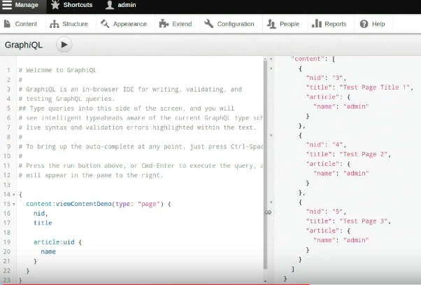

Juampy NR - @juampynr
Senior Developer
Juampy NR - @juampynr
Senior Developer
Quick guide: How to expose content in Drupal 8
| What do you want to do | How you could do it |
|---|---|
| View, Create, Update and Delete entities. | REST & REST UI modules. |
| List content. | Use Views REST exports. |
| Restrict access to your API. | Add an authentication method. |
Part one: fetching data
- REST UI
- Views REST exports
Configuring REST
Evaluating REST for fetching single entities
| Pros | Cons | |
|---|---|---|
| Easy to set up. | Returns EVERYTHING about an entity. | |
| Can expose all entities (even configuration ones). | Does not support access logic such as "show only my user details". | |
| Supports authentication. | Can't set custom labels. |
Listing content with Views REST exports
Image fields in Views REST exports
Paging and filtering in Views REST exports
Evaluating Views REST for listing data
| Pros | Cons | |
|---|---|---|
| Easy to set up. | Does not support authentication (issue). | |
| Supports custom labels, paging and filtering. | Does not report total pages. | |
| Has an API, so it can be extended. | Poor image handling. |
Part two: managing data
Creating an article
Authenticating the request with Basic Auth.
Tips on creating content
- For better authentication, check out the OAuth module.
- To figure out how to structure the data, check out the Self Documenting REST API.
- Find out more examples at the official documentation at Drupal.org.
- For a deep view of Drupal's authentication system, check out this session.
Updating an article
This time, authenticating the request with OAuth
Full details at https://www.drupal.org/node/2558697
Gotchas on creating/updating
- Self Documenting REST API does not show instructions for PATCH.
- Files can't be attached yet.
- Only HAL format is supported.
Part three: new and juicy stuff
GraphQL
Provides a language to query our API.
- Dries likes it.
- Work in progress.
RELAXed Web Services
Provides... something.
Services
Yes. Services.
Useful links
Thanks! Questions?
Want to work at Lullabot? Then talk to me.